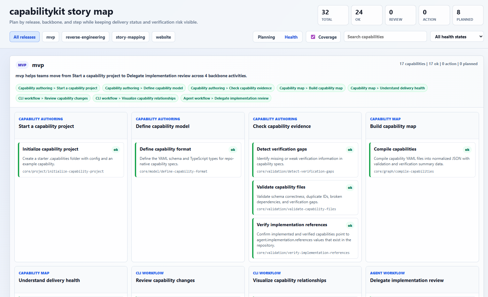

Capability as contract
A capability records what the system should do, why it matters, and which acceptance criteria must stay true as the code changes.
Capabilities as code for AI-native review
CapabilityKit helps reviewers understand AI-generated changes by connecting code diffs back to intended behavior, verification evidence, and downstream impact.
AI agents make implementation cheaper, but they also make it easier for important product decisions to disappear into generated code. CapabilityKit keeps the durable part of the plan: what the system is supposed to do, where it is implemented, how deeply it is verified, and what depends on it.
Video walkthroughs
Follow the video series to see capability files, status summaries, diffs, implementation assessment, impact analysis, and story-map views in context.
Core concepts
CapabilityKit is not a second issue tracker. It turns durable product behavior into version-controlled files that reviewers, tests, and coding agents can inspect together.
A capability records what the system should do, why it matters, and which acceptance criteria must stay true as the code changes.
Implementation references point to source, tests, docs, routes, handlers, and workflows so claims can be reviewed against code.
Automated checks, manual review, known gaps, and saved agent review evidence make confidence visible instead of implied.
Changed files can be mapped back to referenced capabilities and downstream dependents, narrowing what needs retesting.
Capability diffs show what should be added, removed, or changed, while impact and verification show what might be at risk.
Release, backbone, and step metadata organize progressive slices without separating planning from delivery evidence.
Demo narrative
Start with the problem of requirements drifting away from code, open one capability file, then run status, diff, assess, impact, and story-map commands to show how capability review works.
node packages/cli/dist/index.js status
node packages/cli/dist/index.js diff --base HEAD
node packages/cli/dist/index.js assess core/assessment/assess-implementation-coverage
node packages/cli/dist/index.js impact core/model/define-capability-format
node packages/cli/dist/index.js status --story-map --release pr-reviewDeveloper process
CapabilityKit is designed for the moment when a developer or reviewer needs to understand an AI-assisted change without reconstructing requirements from prompts, stale plans, and implementation details.
See added, changed, and removed capability intent, acceptance, verification, references, and review policy.
Compare every acceptance criterion with evidence from the referenced source, test, and documentation files.
Traverse direct and transitive dependents to find related capabilities that may need checks or review.
Add tests, manual review evidence, agent review results, or explicit accepted gaps before confidence decays.
Why this matters
Capability diff
`capabilitykit diff` summarizes intent, acceptance, verification, implementation reference, and ignore policy changes against a Git base. It excludes noisy saved review evidence by default.
capabilitykit diff HEAD
intent changed
acceptance +2/-0
verification +1/-0
Impact: 3 direct, 7 transitiveVerification depth
`capabilitykit assess` reads declared implementation references and places each acceptance criterion beside concrete evidence. Uncertain findings stay visible until semantic review, tests, or accepted gaps resolve them.
covered: status summary exists
uncertain: impact evidence found
uncovered: no semantic review savedImpact graph
`capabilitykit impact` follows explicit `agent.depends_on` relationships and collects suggested automated checks, manual review steps, and known verification gaps across the impacted set.
Direct dependents: 5
Transitive dependents: 9
Suggested checks: npm test, compileSupported coding agents
CapabilityKit can hand a capability assessment bundle to supported coding-agent CLIs. Semantic review inspects implementation evidence and saves structured `agent.review` metadata without editing implementation code.
Runs `codex exec` with the assessment prompt on stdin.
capabilitykit verify core/example --agent codex
Runs Copilot CLI in response-only prompt mode.
capabilitykit verify core/example --agent copilot
Runs Pi in ephemeral print mode without saving a session.
capabilitykit verify core/example --agent pi
Runs Claude Code in non-interactive print mode.
capabilitykit verify core/example --agent claude
Runs Cursor CLI in headless mode without enabling `--force`.
capabilitykit verify core/example --agent cursor-agent
Use explicit arguments and stdin, prompt argument, or prompt-file handoff.
capabilitykit review core/example --agent your-agent
Local verification
`npm run verify` builds the workspaces, runs tests, validates capability files, and refreshes the compiled capability map. It is the same local loop used by release preparation before publishing is triggered.
npm run verify
npm run release:prep -- patchRepo-native structure
Capability files live in `.capabilities/` using folders that mirror ownership, product areas, or platform layers. The hierarchy gives reviewers a readable map before they inspect dependency edges.
.capabilities/
capabilitykit.yaml
core/
model/
define-capability-format.capability.yaml
validation/
validate-capability-files.capability.yaml
detect-verification-gaps.capability.yaml
graph/
compile-capabilities.capability.yaml
diff-capabilities.capability.yaml
analyze-capability-impact.capability.yaml
assessment/
assess-implementation-coverage.capability.yaml
developer-experience/
cli/
skills/
docs/
project/
reference/Capability anatomy
Keep the human-authored section short and focused on product behavior. IDs and area can be derived from file paths, and agent-maintained references or review metadata can be appended later.
title: Diff capabilities
status: implemented
summary: Compare current capability files with a Git base and summarize added,
changed, and removed capabilities.
intent: Help developers understand product and agent-facing intent changes
without reading raw YAML diffs.
acceptance:
- Compares current capabilities against a configurable Git base ref.
- Reports added, changed, and removed capabilities by capability ID.
- Summarizes meaningful field changes such as status, intent, acceptance,
dependencies, implementation references, verification, and ignore policy.
- Includes downstream impact context for changed capabilities.
guidance:
- Compare normalized parsed capabilities, not raw YAML text.
- Avoid raw JSON in the default human output.Story mapping
A capability does not have to ship as one large unit. CapabilityKit lets teams attach story-map metadata to each capability so a first release can prove a thin, coherent outcome, then later releases can deepen the map without moving files or losing implementation evidence. Story-map metadata groups capabilities by release, backbone, and step.
`planning.story_map.release` keeps MVP, website, story-mapping, and follow-on slices visible as roadmap data instead of folder structure.
Story-map metadata groups capabilities by release, backbone, and step, so reviewers can see which part of the outcome each capability strengthens.
Each story-map card still carries capability status, verification gaps, and implementation references, keeping release conversations connected to actual delivery.

planning:
story_map:
backbone: Project communication
step: Explain story mapping
release: website
order: 20The capability ID still comes from its file path. Story-map fields describe how the capability contributes to a release narrative, which lets teams split work progressively without rewriting the capability map.
Capability dependency graph
Folders help teams navigate ownership, but explicit dependencies tell reviewers what behavior relies on a capability. That graph turns a local change into an impact report with checks and manual review guidance.
Open source
Add a `.capabilities/` folder, validate the map, diff capability changes, assess implementation coverage, and use the dependency graph to review impact.
npm i -g @capabilitykit/cli
capabilitykit skill
capabilitykit init